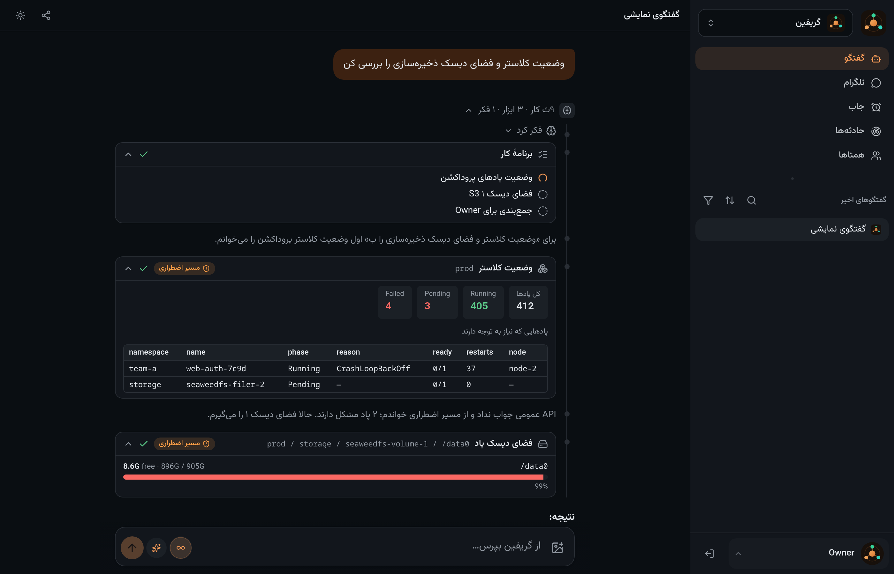

Griffin — your own team of AI agents
Griffin is an open-source, self-hosted platform for a small team of AI agents that work for you. You decide what each agent is, which tools it may use and who may call it — and the agents answer from those tools instead of from the model's memory. It runs on your own machine, on Claude, Cursor or any OpenAI-compatible model.

What Griffin does
Agents you define
Agents are rows in a table, not code: instructions, model, tools and callers. Create one from the UI, the API or a JSON profile.
Permissions per caller
You, another agent, a scheduled job, a colleague on Telegram or an external MCP client each get exactly the tools you grant — enforced in code, not in the prompt.
Delegation
An orchestrator agent plans, delegates to specialists without blocking, and reports back when subtasks finish.
Any model
Claude, Cursor, or any OpenAI-compatible endpoint including local models — chosen per agent and per chat.
Telegram, MCP, terminal
Telegram and Bale bots, a Telegram account bridge, an MCP endpoint for Claude Code and Cursor, a CLI, a Bearer API — or headless.
Charts, files and jobs
Charts from real data, images, PDFs and Markdown inline, and scheduled jobs that deliver to the chat you already use.
Approval for what matters
Irreversible actions wait for your approval; unattended runs refuse them. Every approval is audited.
Rehearsal mode
Simulation chats run the whole agent tree but record side effects instead of executing them.
Your own systems, optional
A separate broker holds credentials and exposes typed tools for the systems you connect; the model process never sees a secret.
Use cases
- What people use Griffin for — personal assistant, research, writing, team questions, reports, operations
- A self-hosted AI agent platform — agents as data, permissions per caller, any model
- An AI assistant on Telegram — for you and for the people who message you
- Griffin as an MCP server — delegate long tasks from Claude Code, Claude Desktop and Cursor
- گریفین به فارسی — ایجنت هوش مصنوعی متنباز و خودمیزبان
Run it in two minutes
git clone https://github.com/paziresh24/Griffin.git griffin && cd griffin
npm ci && npm run build
mkdir -p data workspace
echo "sk-ant-…" > data/anthropic.api-key && chmod 600 data/anthropic.api-key
GRIFFIN_DATA=./data GRIFFIN_WORKSPACE=./workspace PORT=3100 node apps/server/src/index.mjsOr docker compose -f deploy/compose.yaml up -d --build. A fresh install is a chat with one agent — no cluster, vault or YAML.
Frequently asked questions
What is Griffin?
Griffin is an open-source, self-hosted platform for a small team of AI agents. You define each agent's instructions, model and tools, and decide who may call which tool; the agents answer from those tools instead of from the model's memory.
What can I use Griffin for?
A personal assistant on Telegram, research and writing helpers, an assistant your colleagues can message, scheduled reports delivered to a chat, an MCP backend that Claude Code or Cursor can delegate long tasks to, or an operations agent connected to your own systems.
Which AI models does Griffin support?
Each agent picks its engine: the Claude Agent SDK, the Cursor SDK, or any OpenAI-compatible API — including local models served behind an OpenAI-compatible endpoint. Different agents can use different models.
How are permissions handled?
Tool access is filtered per caller before tools reach the model: you, another agent, a scheduled job, a colleague on a messenger and an external MCP client each get only the tools granted to them. Irreversible actions wait for your approval and every approval is recorded.
Do I need servers, Kubernetes or a vault to start?
No. A fresh install is Node 24 and SQLite with one agent you can chat with. Tool packs for your own systems switch on only when you configure them.
Is Griffin free and open source?
Yes. Griffin is MIT-licensed, runs on your own machine, and has no SaaS control plane or telemetry; you only pay for the model you choose.
Documentation
- Agents — profiles, tools, callers and quotas
- Interfaces — web, terminal, HTTP API, MCP, messengers
- Architecture — the app/broker split and the security posture
- Configuration — environment, providers, optional tool packs